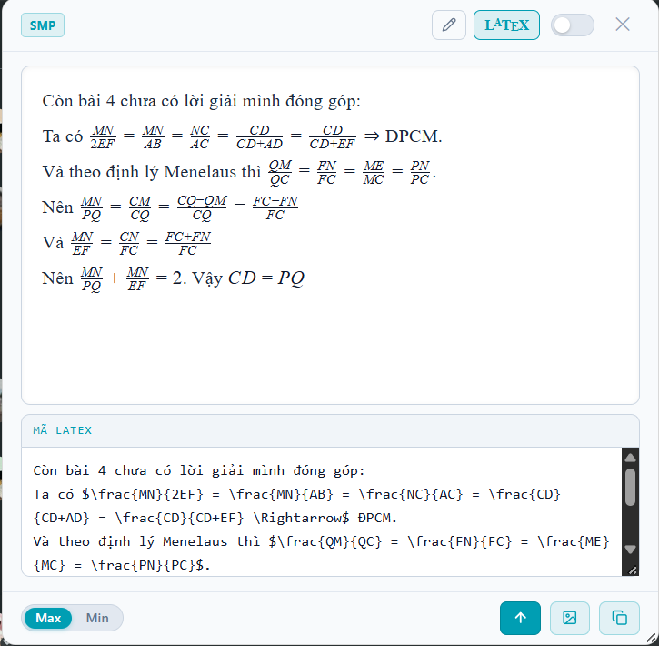
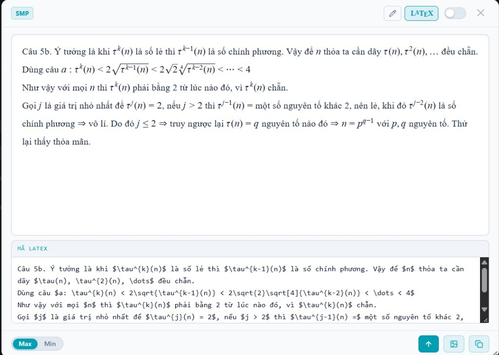
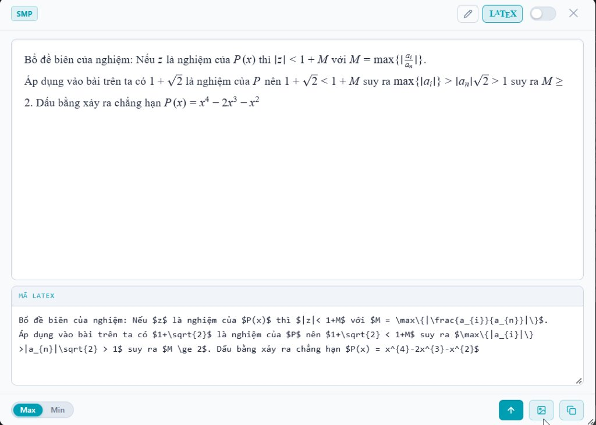

LaTeX Quick Viewer — Tiện Ích Trình Duyệt
Tiện ích mở rộng nhận diện và chuyển đổi tức thì các bình luận toán học gõ tắt trên Facebook, VOZ và diễn đàn thành công thức LaTeX trực quan mà không cần rời màn hình.
Cài Đặt SMP Quick Viewer Cho Trình Duyệt
Bôi đen bình luận toán học → Bấm Alt + Shift + X để dịch ngay tại chỗ, hoặc Alt + Shift + C để mở bảng soạn thảo công thức toán.
Trải Nghiệm Thực Tế Khi Lướt Mạng Xã Hội
Xem cách SMP Quick Viewer chuyển hóa các bình luận gõ thô phức tạp trên Facebook thành công thức toán học sắc nét:

Câu 5b. Ý tưởng là khi tau^(k)(n) là số lẻ thì tau^(k-1)(n) là số chính phương. Vậy để n thỏa ta cần dãy tau(n), tau^2(n), ... đều chẵn.
Dùng câu a: tau^(k)(n) < 2\sqrt{tau^(k-1)(n)}<2\sqrt{2}\sqrt[4]{tau^{k-2}(n)} < ... < 4
Như vậy với mọi n thì tau^(k)(n) phải bằng 2 từ lúc nào đó, vì tau^(k)(n) chẵn.
Gọi j là giá trị nhỏ nhất để tau^(j)(n)=2, nếu j>2 thì tau^(j-1)(n) = một số nguyên tố khác 2, nên lẻ, khi đó tau^(j-2)(n) là số chính phương => vô lí. Do đó j<=2 => truy ngược lại tau(n) = q nguyên tố nào đó => n = p^{q-1} với p, q nguyên tố. Thử lại thấy thỏa mãn.

em góp câu 2:
Bổ đề biên của nghiệm: Nếu z là nghiệm của P(x) thì |z|<1+M với M=max{|ai/an|}.
Áp dụng vào bài trên ta có 1+căn2 là nghiệm của P nên 1+căn2<1+M suy ra max{|ai|}>|an|căn2>1 suy ra M>=2. Dấu bằng xảy ra chẳng hạn P(x)=x^4-2x^3-x^2

Biên Dịch Tại Chỗ
Bôi đen bất kỳ bình luận nào trên Facebook hay diễn đàn, cửa sổ popup hiển thị ngay trên trang mà không cần tải lại hay rời màn hình.
Nhận Diện Toán Thông Minh
Tự động phát hiện phân số lồng, căn thức, hệ phương trình, chuẩn norm, góc, vectơ và ký hiệu Hy Lạp ngay trong văn bản tự nhiên.
Xuất Ảnh Nét Cao 1-Chạm
Sao chép tức thì ảnh render sắc nét vào Clipboard để bạn dán trực tiếp (Ctrl + V) vào phần trả lời bình luận Facebook hay thảo luận nhóm.
100% Offline & Bảo Mật
Hoạt động hoàn toàn nội bộ trên máy bạn, tốc độ xử lý dưới 10ms, không yêu cầu tài khoản và không gửi bất kỳ dữ liệu nào ra máy chủ ngoài.
Sẵn Sàng Trải Nghiệm Đọc Toán Tiện Lợi?
Cài đặt ngay tiện ích SMP LaTeX Quick Viewer để biến việc đọc thảo luận chuyên toán trở nên dễ dàng và thú vị hơn.